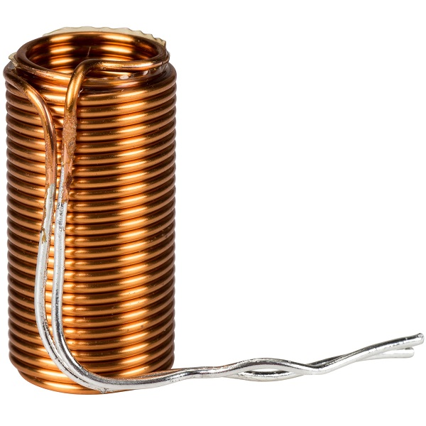
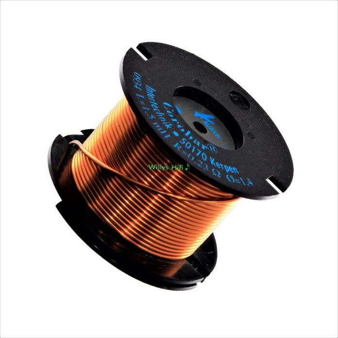
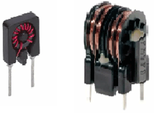
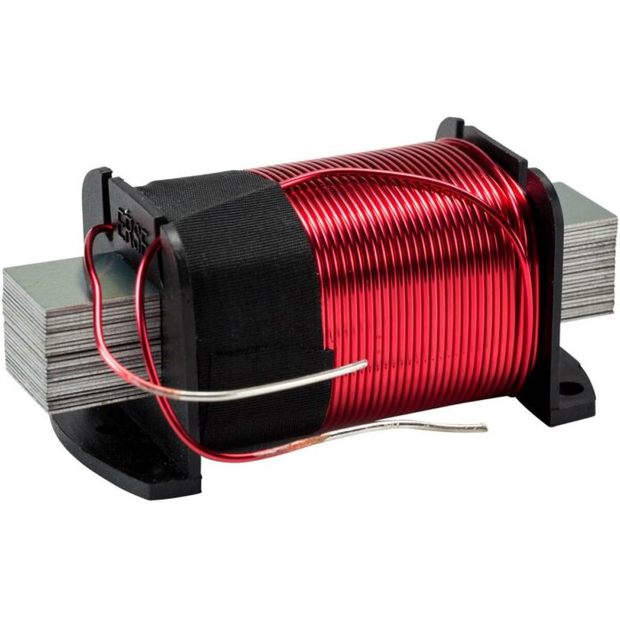
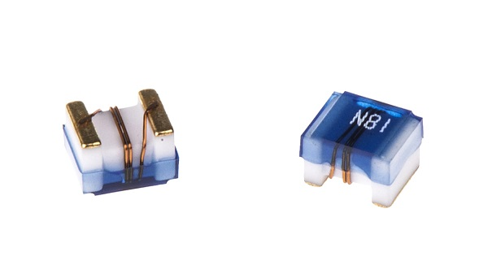

Air Core Inductor

The commonly seen inductor, with a simple winding, is this Air-Core Inductor. This has nothing but air as the core material. Air core inductor uses any non-magnetic material like plastic and ceramic as core to reduce the core losses i.e. eddy current and stray losses, especially when the operating frequency is very high. However, the use of a non-magnetic core also decreases its inductance. Air Core Inductors are used for constructing RF tuning coils. They are also used in filter circuits, snubber circuits, and high-frequency applications including TV and radio receivers.
Iron Core Inductor

These Inductors have Ferromagnetic materials, such as ferrite or iron, as the core material. The usage of such core materials helps in the increase of inductance, due to their high magnetic permeability. These inductors have high power value but are limited in high-frequency capacity. The inductors that have ferromagnetic core materials just like these suffer from core losses and energy losses at high frequencies. In the areas where low space inductors are in need then these iron core inductors are the best option. These Inductors are also used in the manufacture of a few types of transformers. Iron core inductors are applicable in audio equipment. When compared with other core indicators these have very limited applications.
Ferrite Core Inductor

These types of inductors use ferrite cores. Ferrite is a material with high magnetic permeability made from the mixture of iron oxide (ferric oxide, Fe2O3) and a small percentage of other metals such as nickel, zinc, barium, etc. The ferrite core has very low electrical conductivity which reduces the eddy current in the core, resulting in very low eddy current loss at high frequency. Hence they can be used in high-frequency applications. They also offer advantages of decreased cost.
Laminated Steel Core Inductor

In such types of inductors, the core is laminated which means that it is made up of a bunch of thin sheets placed on top of each other in a tight form. The sheets are coated with insulation to increase their electrical resistance and prevent eddy current flow between them. Therefore the eddy current loss in laminated core inductors decreases significantly. They are used in high-power applications.
Iron Powder Core Inductor

These are formed from very fine particles with insulated particles of highly pure iron powder. This type of inductor contains nearly 100% iron only. It gives us a solid-looking core when this iron power is compressed under very high pressure and mixed with a binder such as epoxy or phenolic. By this action iron powder forms like a magnetic solid structure which consists of a distributed air gap. Due to this air gap, it is capable of storing high magnetic flux when compared with the ferrite core. This characteristic allows a higher DC level to flow through the inductor before the inductor saturates. This leads to the reduced permeability of the core. Mostly the initial permeability is below 100 only. Thus these inductors possess high-temperature coefficient stability. These are mainly applicable in switching power supplies.
Ceramic Core Inductor

Ceramic is a non-magnetic material just like air. Ceramic cores are used to provide a shape for the coil and a structure for its terminals to sit upon. As it is a non-magnetic material, it has low magnetic permeability and low inductance. But it provides a reduction in the core losses. It is mostly available in SMD packaging and is used in applications where low core losses, High Q, and low inductance are required.